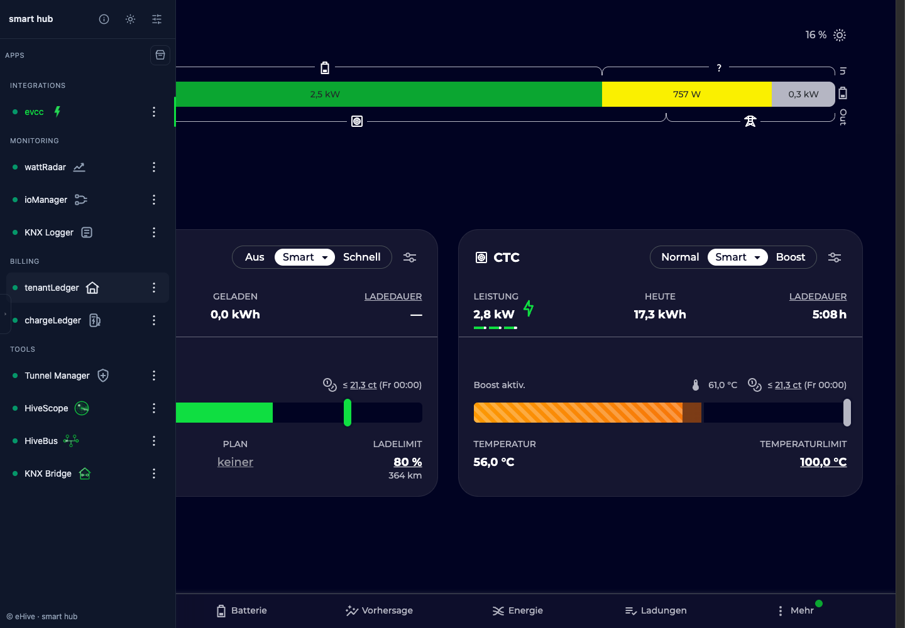
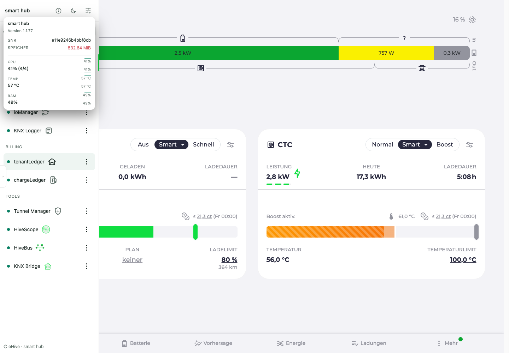

Was hat sich für dich verändert? Nichts.
Du öffnest deinen eHive, schaust auf deine Energieflüsse und nutzt deine Apps wie gewohnt. Du musst keine neue Bedienlogik lernen und dich nicht durch zusätzliche Menüs arbeiten. Es wirkt einfach alles etwas aufgeräumter und intuitiver. Genau so war es gedacht.
Ein UI, das man nicht benötigt, ist noch das beste UI.
Eine gute Oberfläche drängt sich nicht in den Vordergrund. Sie hilft dir, wenn du sie brauchst, und lässt dein Energiemanagement ansonsten seine Arbeit machen. Deshalb haben wir beim neuen SmartHub vor allem an den Details gearbeitet – und unter der Oberfläche viel weiterentwickelt.

Schicker: ein stimmiges Gesamtbild
Klarere Flächen, abgestimmte Farben und ein einheitlicheres Erscheinungsbild verbinden SmartHub und die eHive-Apps. Das helle und dunkle Design passen sich an die vertraute evcc-Darstellung an. Auch der eingebettete Node-RED-Editor übernimmt jetzt den Wechsel zwischen Hell und Dunkel.


Schneller: die Technik arbeitet im Hintergrund
Die technische Basis läuft jetzt mit Node.js 24 und aktualisierten Komponenten. Häufig benötigte Statusinformationen werden zwischengespeichert, statt sie bei jedem Zugriff erneut vollständig abzufragen. Das hält unnötige Arbeit vom Gerät fern und unterstützt eine flüssige Bedienung. Unser Ziel: Du kommst direkt zu dem, was du gerade brauchst.
Sicherer: Schutz an den entscheidenden Stellen
Systemeinstellungen und geschützte Verwaltungsaktionen prüfen die Anmeldung konsequenter. Zusätzliche Prüfungen schützen vor fremd ausgelösten Änderungen über den Browser. Auch die Weiterleitung zu Apps und die Fehlerbehandlung bei Updates wurden überarbeitet. Die Software-Abhängigkeiten haben wir aktualisiert und die Prüfung der ausgelieferten Pakete erweitert.
Die lokale Arbeitsweise bleibt erhalten: eHive One steuert und verarbeitet deine lokalen Daten bei dir. Ob du Fernzugriff nutzt, entscheidest du selbst. Mehr dazu findest du im Beitrag Deine Daten bleiben bei dir.
Kleine Details, die im Alltag helfen
- Speicher im Blick: Das Info-Panel zeigt den freien Systemspeicher und hebt knappen Platz hervor. Bei USB-Speichern siehst du Kapazität und verfügbaren Platz.
- USB sicher auswerfen: Direkt beim ausgewählten Datenträger sitzt die Auswerfen-Funktion. Apps auf diesem Speicher werden dabei kontrolliert angehalten und nach dem Wiederverbinden wieder aufgenommen.
- Backups mit Augenmaß: Lokale Sicherungen haben ein gemeinsames Budget von 500 MB. Verifizierte Wiederherstellungspunkte werden bei der Bereinigung geschützt.
- Einrichtung mit rotem Faden: Ein Assistent führt durch die Inbetriebnahme und lässt sich bei Bedarf aus den Einstellungen fortsetzen. Dazu gehören die Einrichtung der Netzsteuerung und ein Übergabeprotokoll.
- Mehr Möglichkeiten bei Bedarf: Node-RED und ioBroker stehen als Beta für entsprechend freigeschaltete eHive-One-Geräte mit 2 GB RAM und USB-App-Speicher bereit. Wenn du sie nicht brauchst, bleibt dein gewohnter Alltag unverändert.


Auf echten eHive-Geräten geprüft
Für die stabile Freigabe von SmartHub 1.1.77 haben wir 203 SmartHub-Tests auf ARM64 ausgeführt und den Stand auf zwei eHive-Geräten geprüft. Dazu kamen Tests der App-Oberflächen, des Updaters, der USB-Anzeige und des Designwechsels. Auf beiden Geräten lief evcc während der Installation ohne Neustart weiter.
Vertraut bleiben. Besser werden.
Schicker, schneller und sicherer – das war unser Ziel. Du sollst davon profitieren, ohne dich mit der Technik dahinter beschäftigen zu müssen. Der neue SmartHub bleibt dein vertrauter Einstieg in eHive One. Nur mit mehr Feinschliff und einer stärkeren Basis.
SmartHub 1.1.77 ist als stabiles Update verfügbar. Du findest es über die Update-Funktion deines eHive.